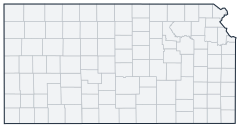

Historical county changes, 1790–1990 › Kansas

| Name↕ | Unit↕ | Existed↕ | FIPS↕ |
|---|---|---|---|
| Allen County | county | 1860–1990 | 20001 |
| Anderson County | county | 1860–1990 | 20003 |
| Atchison County | county | 1860–1990 | 20005 |
| Barber County | county | 1880–1990 | 20007 |
| Barton County | county | 1870–1990 | 20009 |
| Bourbon County | county | 1860–1990 | 20011 |
| Breckinridge County | county | 1860 | 20011.1 |
| Brown County | county | 1860–1990 | 20013 |
| Buffalo County | county | 1880 | 20013.1 |
| Butler County | county | 1860–1990 | 20015 |
| Chase County | county | 1860–1990 | 20017 |
| Chautauqua County | county | 1880–1990 | 20019 |
| Cherokee County | county | 1860–1990 | 20021 |
| Cheyenne County | county | 1880–1990 | 20023 |
| Clark County | county | 1880–1990 | 20025 |
| Clay County | county | 1860–1990 | 20027 |
| Cloud County | county | 1870–1990 | 20029 |
| Coffey County | county | 1860–1990 | 20031 |
| Comanche County | county | 1880–1990 | 20033 |
| Cowley County | county | 1860–1990 | 20035 |
| Crawford County | county | 1870–1990 | 20037 |
| Decatur County | county | 1880–1990 | 20039 |
| Dickinson County | county | 1860–1990 | 20041 |
| Doniphan County | county | 1860–1990 | 20043 |
| Douglas County | county | 1860–1990 | 20045 |
| Edwards County | county | 1880–1990 | 20047 |
| Elk County | county | 1880–1990 | 20049 |
| Ellis County | county | 1870–1990 | 20051 |
| Ellsworth County | county | 1870–1990 | 20053 |
| Finney County | county | 1880–1990 | 20055 |
| Foote County | county | 1880 | 20055.1 |
| Ford County | county | 1870–1990 | 20057 |
| Franklin County | county | 1860–1990 | 20059 |
| Garfield County | county | 1890 | 20059.1 |
| Geary County | county | 1860–1990 | 20061 |
| Gove County | county | 1880–1990 | 20063 |
| Graham County | county | 1880–1990 | 20065 |
| Grant County | county | 1880–1990 | 20067 |
| Gray County | county | 1890–1990 | 20069 |
| Greeley County | county | 1880–1990 | 20071 |
| Greenwood County | county | 1860–1990 | 20073 |
| Hamilton County | county | 1880–1990 | 20075 |
| Harper County | county | 1880–1990 | 20077 |
| Harvey County | county | 1880–1990 | 20079 |
| Haskell County | county | 1880–1990 | 20081 |
| Hodgeman County | county | 1880–1990 | 20083 |
| Howard County | county | 1860–1870 | 20083.1 |
| Jackson County | county | 1860–1990 | 20085 |
| Jefferson County | county | 1860–1990 | 20087 |
| Jewell County | county | 1870–1990 | 20089 |
| Johnson County | county | 1860–1990 | 20091 |
| Kearny County | county | 1880–1990 | 20093 |
| Kingman County | county | 1880–1990 | 20095 |
| Kiowa County | county | 1890–1990 | 20097 |
| Labette County | county | 1870–1990 | 20099 |
| Lane County | county | 1880–1990 | 20101 |
| Leavenworth County | county | 1860–1990 | 20103 |
| Lincoln County | county | 1870–1990 | 20105 |
| Linn County | county | 1860–1990 | 20107 |
| Logan County | county | 1890–1990 | 20109 |
| Lyon County | county | 1870–1990 | 20111 |
| Madison County | county | 1860 | 20111.1 |
| Marion County | county | 1860–1990 | 20115 |
| Marshall County | county | 1860–1990 | 20117 |
| McPherson County | county | 1870–1990 | 20113 |
| Meade County | county | 1880–1990 | 20119 |
| Miami County | county | 1860–1990 | 20121 |
| Mitchell County | county | 1870–1990 | 20123 |
| Montgomery County | county | 1870–1990 | 20125 |
| Morris County | county | 1860–1990 | 20127 |
| Morton County | county | 1880–1990 | 20129 |
| Nemaha County | county | 1860–1990 | 20131 |
| Neosho County | county | 1860–1990 | 20133 |
| Ness County | county | 1870–1990 | 20135 |
| Norton County | county | 1880–1990 | 20137 |
| Osage County | county | 1860–1990 | 20139 |
| Osborne County | county | 1870–1990 | 20141 |
| Otoe County | county | 1860 | 20141.1 |
| Ottawa County | county | 1870–1990 | 20143 |
| Pawnee County | county | 1870–1990 | 20145 |
| Phillips County | county | 1880–1990 | 20147 |
| Pottawatomie County | county | 1860–1990 | 20149 |
| Pratt County | county | 1880–1990 | 20151 |
| Rawlins County | county | 1880–1990 | 20153 |
| Reno County | county | 1880–1990 | 20155 |
| Republic County | county | 1870–1990 | 20157 |
| Rice County | county | 1870–1990 | 20159 |
| Riley County | county | 1860–1990 | 20161 |
| Rooks County | county | 1880–1990 | 20163 |
| Rush County | county | 1880–1990 | 20165 |
| Russell County | county | 1870–1990 | 20167 |
| Saline County | county | 1870–1990 | 20169 |
| Scott County | county | 1880–1990 | 20171 |
| Sedgwick County | county | 1870–1990 | 20173 |
| Seward County | county | 1880–1990 | 20175 |
| Shawnee County | county | 1860–1990 | 20177 |
| Sheridan County | county | 1880–1990 | 20179 |
| Sherman County | county | 1880–1990 | 20181 |
| Smith County | county | 1870–1990 | 20183 |
| Stafford County | county | 1880–1990 | 20185 |
| Stanton County | county | 1880–1990 | 20187 |
| Stevens County | county | 1880–1990 | 20189 |
| Sumner County | county | 1870–1990 | 20191 |
| Thomas County | county | 1880–1990 | 20193 |
| Trego County | county | 1870–1990 | 20195 |
| Wabaunsee County | county | 1860–1990 | 20197 |
| Wallace County | county | 1870–1990 | 20199 |
| Washington County | county | 1860–1990 | 20201 |
| Wichita County | county | 1880–1990 | 20203 |
| Wilson County | county | 1860–1990 | 20205 |
| Woodson County | county | 1860–1990 | 20207 |
| Wyandotte County | county | 1860–1990 | 20209 |
an earlier Arapahoe County existed in 1860 in the portion of Kansas Territory that became Colorado Territory in 1861; its territory was reported in 1860 as part of Colorado(p. 62, Note 3).
Note: Decimals in FIPS codes come from Forstall, who gives every county a code, including counties that no longer exist. A county abolished between 1930 and 1990 keeps the code it had. However, a county which was abolished prior to 1930 never received a code. Such a county is given the code of the county which precedes it alphabetically plus a decimal to hold its place in the list.
Source: Richard L. Forstall (1996), Population of States and Counties of the United States: 1790 to 1990, U.S. Bureau of the Census (public domain). Always check a row against the scan it links to.